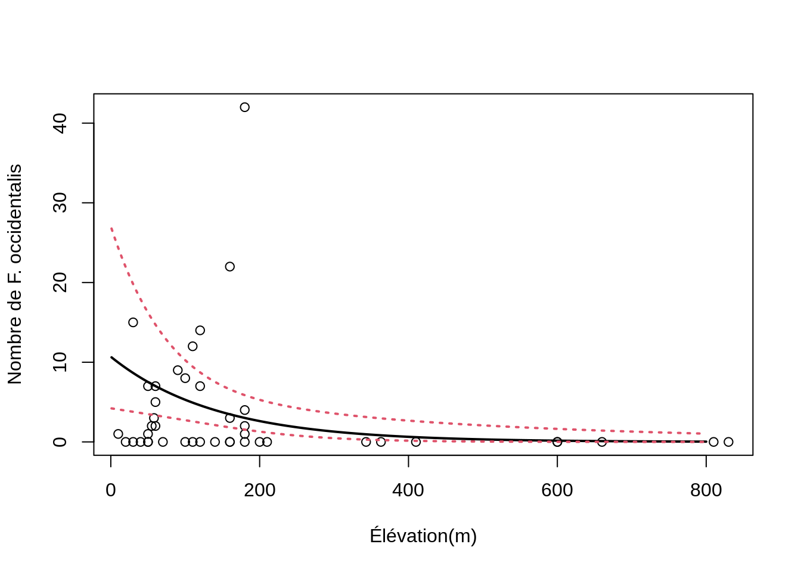
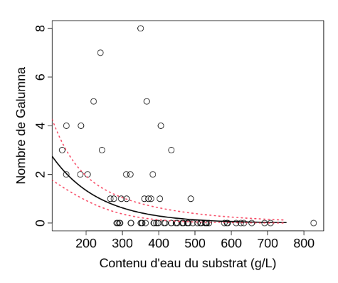

Chapitre 10 GLM avec une distribution binomiale négative
Un GLM avec une distribution binomiale négative (BN) est utilisé lorsque la surdispersion est très forte. La distribution BN contient un paramètre supplémentaire, k, qui va être très utile pour gérer les problèmes de surdispersion. Avant de rentrer dans les détails sur R, voyons rapidement ce qui se cache derrière la distribution BN. En fait, la distribution BN est la combinaison de deux distributions; une distribution de Poisson et une distribution Gamma. La distribution BN définie la distribution d’une variable aléatoire discrète de la même manière qu’une distribution de Poisson mais autorise la variance à être différente de la moyenne. Le mélange entre la distribution de Poisson et la distribution Gamma peut se résumer à l’aide de deux paramètres, µ et k qui spécifie la distribution de la facon suivante :
Y ~ BN(µ, k)
E(Y) = µ et Var(Y) = µ + µ²/k
De cette manière nous pouvons voir comment cette distribution va gérer la surdispersion dans les modèles GLM. Le deuxième terme de la variance de la distribution BN va déterminer le degré de surdispersion. En effet, la surdispersion est indirectement déterminée par k, que représente le paramètre de dispersion. Si k est grand (par rapport à μ²), la deuxième partie de la variance, µ²/k va s’approcher de 0, et la variance de Y sera μ. Dans ce cas la distribution BN converge vers la distribution de Poisson et vous pourriez tout aussi bien utiliser cette dernière. Par contre, plus k sera petit et plus la surdispersion sera grande. Comme avec toutes les autres distributions, un GLM avec une distribution BN se spécifie en trois étapes. Tout d’abord le modèle fait l’hypothèse que les Yi suivent une distribution BN de moyenne μi et de paramètre k.
Yi ∼ BN(µi, k)
E(Yi) = µi et Var(Yi) = µi + µi²/k
Les deux dernières étapes définissent le prédicteur linéaire ainsi que la fonction de lien entre la moyenne des Yi et le prédicteur linéaire. La fonction de lien utilisée par les GLMs avec une distribution BN est le logarithme ce qui permet de s’assurer que les valeurs prédites soient toujours positives.
- log(µi) = β0 + Xi.β
ou
- µi = exp(β0 + Xi.β)
Vous pouvez ajuster un GLM avec une distribution BN à l’aide de la
fonction glm.nb() du package MASS:
##
## Call:
## glm.nb(formula = Faramea.occidentalis ~ Elevation, data = faramea,
## init.theta = 0.2593107955, link = log)
##
## Deviance Residuals:
## Min 1Q Median 3Q Max
## -1.36748 -1.17564 -0.51338 -0.05226 2.25716
##
## Coefficients:
## Estimate Std. Error z value Pr(>|z|)
## (Intercept) 2.369226 0.473841 5.00 5.73e-07 ***
## Elevation -0.007038 0.002496 -2.82 0.00481 **
## ---
## Signif. codes: 0 '***' 0.001 '**' 0.01 '*' 0.05 '.' 0.1 ' ' 1
##
## (Dispersion parameter for Negative Binomial(0.2593) family taken to be 1)
##
## Null deviance: 41.974 on 42 degrees of freedom
## Residual deviance: 36.343 on 41 degrees of freedom
## AIC: 182.51
##
## Number of Fisher Scoring iterations: 1
##
##
## Theta: 0.2593
## Std. Err.: 0.0755
##
## 2 x log-likelihood: -176.5090Le résumé du modèle et similaire à celui des autres GLMs (e.g. GLMs Poisson). Cependant vous avez maintenant un nouveau paramètre, theta, qui est le paramètre k de la variance de votre distribution. L’écart-type de ce paramètre est aussi fourni, mais attention à son interprétation car l’intervalle n’est pas symétrique.
10.1 Représentation graphique du modèle final
Le GLM avec une distribution BN semble être le meilleur modèle pour modéliser nos données. Nous voulons maintenant représenter la relation entre le nombre de Faramea occidentalis et l’élévation.
Utilisez summary pour obtenir les paramètres.
## [1] 2.369226## [1] -0.007038124Utilisez les écarts-types pour construire l’intervalle de confiance.
## [1] 0.4738409## [1] 0.002496143pp <- predict(glm.negbin, newdata = data.frame(Elevation = 1:800),
se.fit = TRUE)
linkinv <- family(glm.negbin)$linkinv ## inverse-link function
pframe <- as.data.frame(pp$fit)
names(pframe) <- "pred0"
pframe$pred <- linkinv(pp$fit)
sc <- abs(qnorm((1 - 0.95)/2)) ## Normal approx. to likelihood
pframe <- transform(pframe, lwr = linkinv(pred0 - sc * pp$se.fit),
upr = linkinv(pred0 + sc * pp$se.fit))
plot(faramea$Elevation, faramea$Faramea.occidentalis, ylab = "Nombre de F. occidentalis",
xlab = "Élévation(m)")
lines(pframe$pred, lwd = 2)
lines(pframe$upr, col = 2, lty = 3, lwd = 2)
lines(pframe$lwr, col = 2, lty = 3, lwd = 2)
Nous pouvons voir que le nombre de Faramea occidentalis diminue de manière significative avec l’élévation. Toutefois, l’intervalle de confiance autour de notre modèle est assez large, notamment à faible élévation.
10.1.1 Défi 3
Utilisez le jeu de données mites! Modélisez l’abondance de l’espèce
Galumna en fonction des caractéristiques du substrat (son contenu en eau
WatrCont et sa densité SubsDens).
Faut-il contrôler pour la surdispersion?
Quelles variables explicatives ont un effet significatif?
Selectionnez le meilleur modèle!
Retirez une variable à la fois et comparez le modèle imbriqué au modèle saturé (ou complet):
Spécifiez un modèle imbriqué manuellement, appelez le MyGLM2,
et utilisez la fonction anova():
Solution
# GLM Poisson
glm.p = glm(Galumna ~ WatrCont + SubsDens, data = mites, family = poisson)
# GLM quasi-Poisson
glm.qp = update(glm.p, family = quasipoisson)
# sélection du modèle
drop1(glm.qp, test = "Chi")## Single term deletions
##
## Model:
## Galumna ~ WatrCont + SubsDens
## Df Deviance scaled dev. Pr(>Chi)
## <none> 101.49
## WatrCont 1 168.10 31.711 1.789e-08 ***
## SubsDens 1 108.05 3.125 0.07708 .
## ---
## Signif. codes: 0 '***' 0.001 '**' 0.01 '*' 0.05 '.' 0.1 ' ' 1# ou
glm.qp2 = glm(Galumna ~ WatrCont, data = mites, family = quasipoisson)
anova(glm.qp2, glm.qp, test = "Chisq")## Analysis of Deviance Table
##
## Model 1: Galumna ~ WatrCont
## Model 2: Galumna ~ WatrCont + SubsDens
## Resid. Df Resid. Dev Df Deviance Pr(>Chi)
## 1 68 108.05
## 2 67 101.49 1 6.5657 0.07708 .
## ---
## Signif. codes: 0 '***' 0.001 '**' 0.01 '*' 0.05 '.' 0.1 ' ' 1